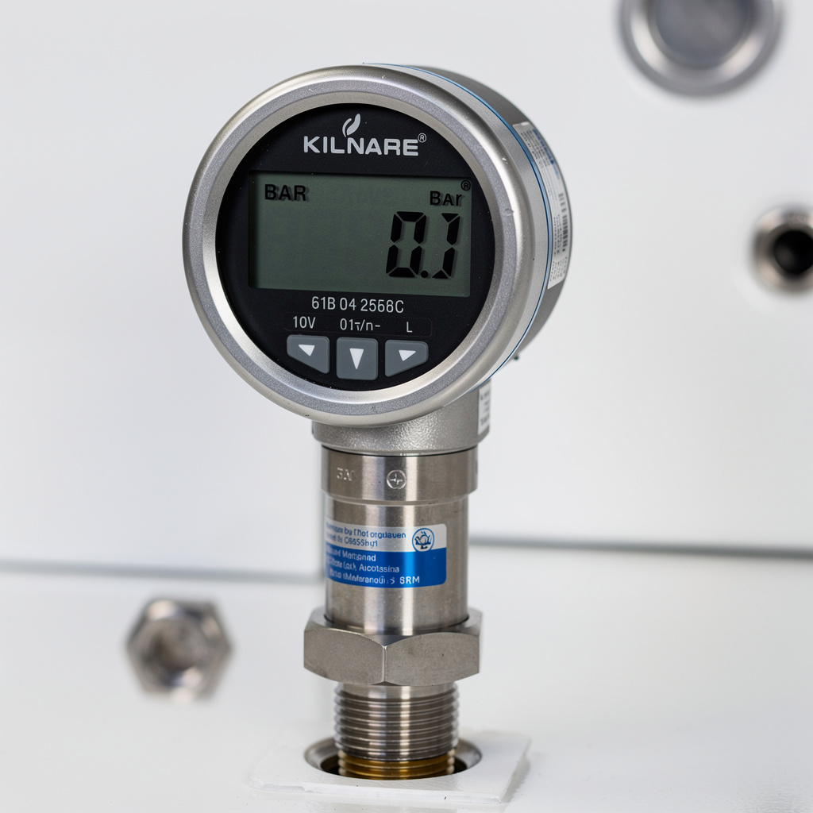
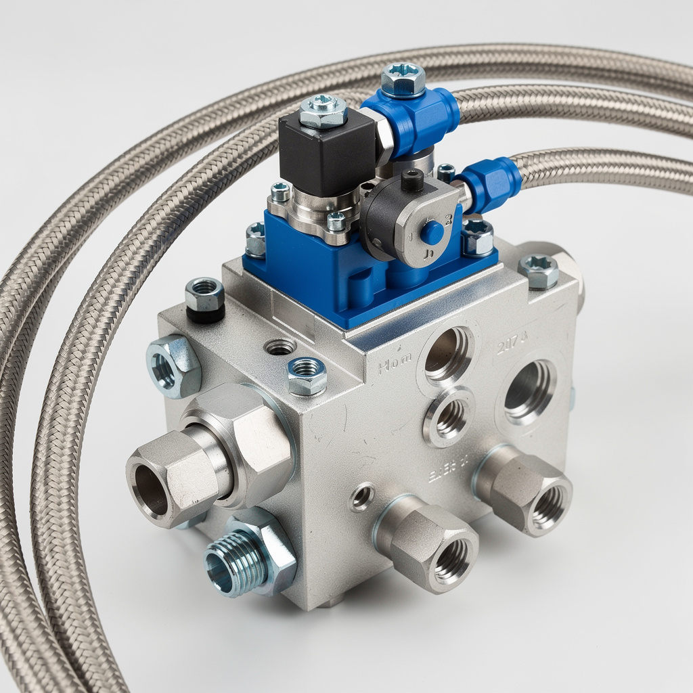

Dépannage hydraulique presse découpe / pliage
// Le Problème
Symptôme : Perte brutale de pression en descente rapide vers position pliage. Manomètre principal : chute 80 → 30 bar. Bruit violent type « coup de bélier » à chaque inversion descente/montée.
Impact : Arrêt machine. Production interrompue depuis 2 h.
// Diagnostic
Mesures multi-points : amont filtre = 80 bar ✓ ; amont vérin tige descente = 32 bar ✗ ; circuit montée = 78 bar ✓ → panne localisée circuit descente.
Auscultation stéthoscope : coup de bélier localisé à l'accumulateur hydropneumatique côté montée, synchrone avec inversion cycle.
Clapet anti-retour descente : morceau de joint torique écrasé coincé dans le siège + joint clapet partiellement dégradé (température huile élevée).
Température huile : 68 °C (vs < 55 °C normal). Filtre retour noir saturé → échange thermique dégradé.



// Solution apportée
// Résultat mesuré
Intervention réalisée en 3h20 (prévision constructeur 7h). Production relancée le jour même. Pression rétablie 80 bar stable. Coups hydrauliques supprimés. Maintenance préventive avancée : remplacement huile + filtres programmés 2 mois en avance. Révision pompe planifiée GMAO.